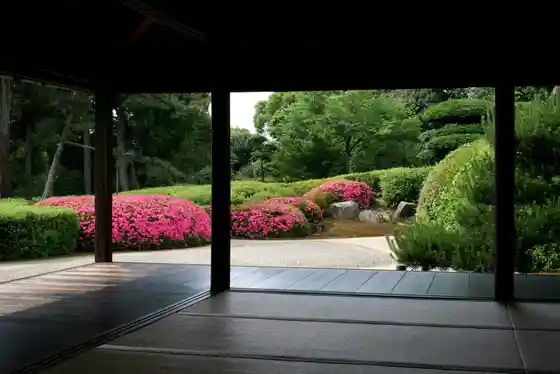
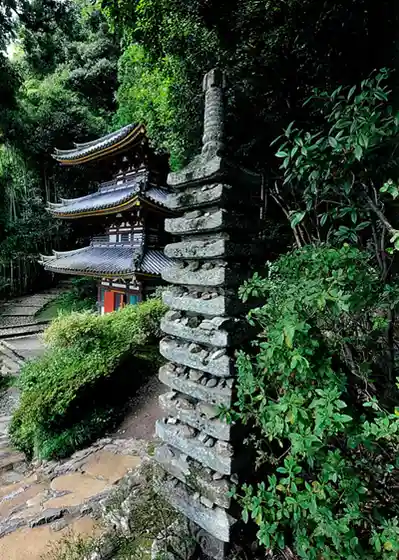
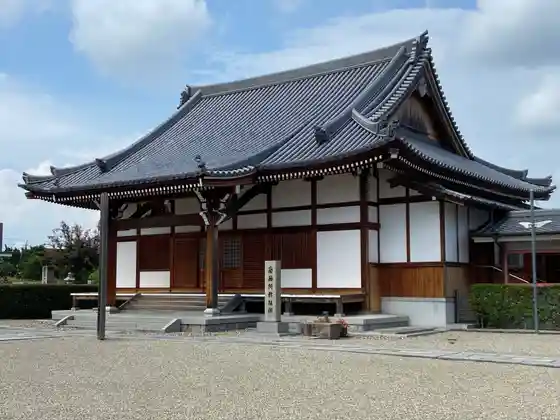
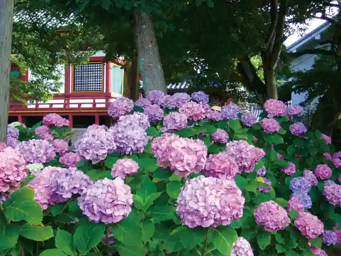

Koriyama Castle Ruins
Yamatokoriyama, Nara · 0743-53-1151 · Official / source link
Jiko In
Yamatokoriyama, Nara · 0743-53-3004 · Official / source link

Matsuo Tera
Yamatokoriyama, Nara · 0743-53-5023 · Official / source link

Hora Izumi Tera
Yamatokoriyama, Nara · 0743-52-2893 · Official / source link

Yada Tera
Yamatokoriyama, Nara · 0743-53-1445 · Official / source link

Yamatokoriyama General Park Tamokuteki Gym (Kingyo Sukuea)
Yamatokoriyama, Nara · 0743-55-1010 · Official / source link
Tomei Tera
Yamatokoriyama, Nara · 0743-52-7320 · Official / source link
Jokei Tera
Yamatokoriyama, Nara · 0743-52-3953 · Official / source link
Nara Prefectural Minzoku Museum
Yamatokoriyama, Nara · 0743-53-3171 · Official / source link
Yamatokoriyama Choka Monogatari Kan
Yamatokoriyama, Nara · 0743-52-8008 · Official / source link
Prefectural Yamato Minzoku Park
Yamatokoriyama, Nara · 0743-53-3171 · Official / source link
Yamatokoriyama Tateri Yama no Eki Kaze Tombo Yagaikatsudo Center
Yamatokoriyama, Nara · 0743-53-7290 · Official / source link
Koriyama Kingyo Museum
Yamatokoriyama, Nara · 0743-52-3418 · Official / source link
Yakuen Hachiman Shrine
Yamatokoriyama, Nara · 0743-53-1355 · Official / source link
Hako Honkan (Koya)
Yamatokoriyama, Nara · 0743-58-5531 · Official / source link
Hitai An Tera
Yamatokoriyama, Nara · 0743-59-1128 · Official / source link